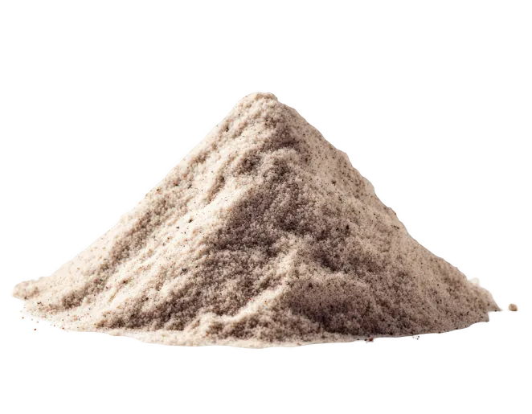

Housing
Being tropical animals, hermit Krabz need specific aquarium environment to keep them healty and happy. Here at Krabz, we understand that it can be a lot to learn so we have all you need to know about setting up your aquarium right here! If you have a specific question, our care team would be delighted to help!
Enclosure
Aquarium
Choose a glass aquarium for your hermit Krabz. Glass is good because it easily keeps the heat in and makes it harder for cold drafts to get into your enclosure. It also makes it easier to see your little friends! Avoid using plastic bug keepers; hermies are not insects, they are fragile crustacians. Plastic doesn't hold heat as well and are often too small.
You want to ideally keep more than one Krab for their welbeing. This is because in the wild, they live in huge colonies and prefer to have company. This is why we don;t recomend smaller aquariums. If it is too small, the Krabz may fight and won't have anywhere to dig their tunnels without disturbing their niebours.
Our best recomendation, is a tall aquarium with doors that open from the front rather than from the top. This makes setting up the tank so much easier! And reptile aquarium will do as long as there is at least 6 inches of floor available in the bottom.
Decor
Krabz climb trees out in the wild! So placing some beautiful driftwood in the aquarium will make it feel more like home to them, while giving them something to climb on. They may also eat the driftwood, so it is important to get natrual non-toxic driftwood that is not painted.
Providing them with pkenty of little hiding places like coco huts and half-plant pots will encourage them to be more active because they will feel safer. Feel free to purchase fake plants for them - any plants sold for frogs and fish are generally safe as long as the fake leaves are not cloth (they might try eating it!).
Environment
Heating & Cooling
Comming from the tropics of northern Australia, these Krabz need heat and humidity to survive. If you live in cooler places such as Victoria, it might be worth purchasing a thermostat for your aquarium and a heat lamp.
Humidity
Ideally you want to have your humidity around 75 - 80%. You can measure this with a hydrometer. If it is too high, mould could grow in the tank. Open the lid for a little while, and that should let some of the moisture out. If it is too low, mist the aquarium with a spray bottle. But remember to use water that is a little warm. Placing more than one water bowl in the aquarium helps boost humidity.
Heatlamps will dry out your aquarium, but misting it with a spray bottle will keep the levels up. Once every month or so, tip little bits of water over the sand to stop it drying out (only a little!). Be mindful when misting the aquarium if the heat lamp is on!
Substrate
Sand
By far, sand is the most affordable substrate. It is also very easy to keep moist and gives the aquarium beach vibes! You want at least 6 inches of sand on the floor of the aquarium to provide them with plenty of digging space. Make sure you add enough water to the sand so it is "sand castle consistency". If it is too wet, water could pool at the bottom of the tank causing flooding. If there isnt enough, their tunnels could colapse fourcing them to moult on the surface which is dangerous for them.
Coco Fibre
A little more expensive, coco fibre is easier to dig with and gives the Krabz an extra food source! You can mix it with the sand or use it by itself. It also will boost humidity in the aquarium.
Housing Products

Starter Bundle
Grab the essentials for up to $10 off!

Sand
The perfectly cheap, and sustainable substrate for your Krabz home!

Driftwood
Give the Krabz excercise and make your aquarium look fabulous!

Water Pool
With a safety feature to help little Krabz climb to safety, perfect for Krabz of all sizes.